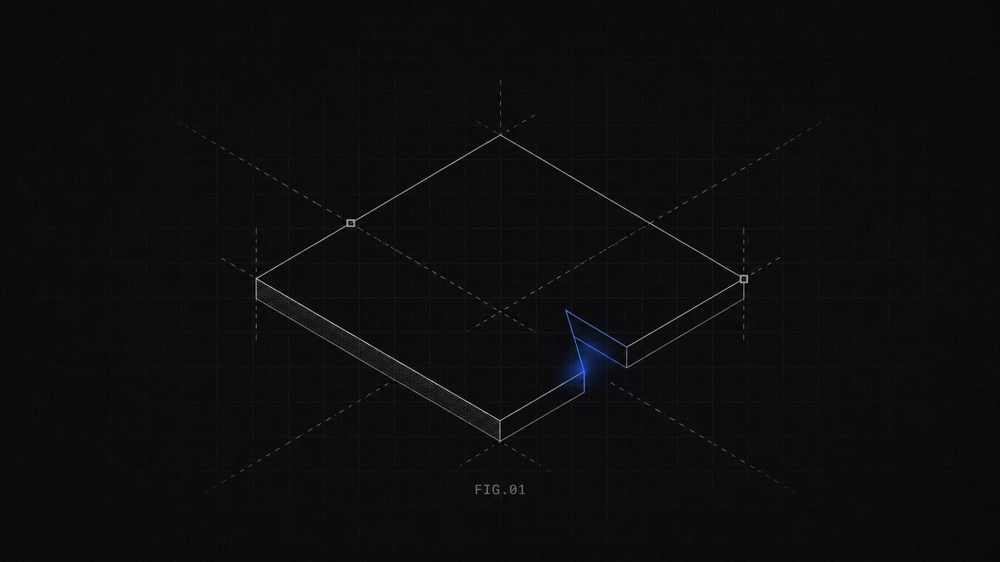

<!doctype html>
<html lang="en" data-variant="a">
<head>
<meta charset="utf-8">
<meta name="viewport" content="width=device-width, initial-scale=1">
<title>Drawn To — give your coding agent a trained eye</title>
<meta name="description" content="An agent skill that replaces 'make it look good' with a locked design direction. This page is the proof: the same content, five locked directions, cycling.">
<meta property="og:title" content="Drawn To — give your coding agent a trained eye">
<meta property="og:description" content="Same content. Five locked directions. One skill. 51 references reverse-engineered into 12 constants and 8 style families.">
<meta property="og:image" content="assets/social-card.png">
<meta name="twitter:card" content="summary_large_image">
<meta name="twitter:image" content="assets/social-card.png">
<link rel="preconnect" href="https://fonts.googleapis.com">
<link rel="stylesheet" href="https://fonts.googleapis.com/css2?family=Inter:wght@400;500;600&family=Geist+Mono:wght@400;500&family=Instrument+Serif&display=swap">
<style>
/* =====================================================================
   Drawn To — one content model, five locked directions, cycling.
   Locks: docs/design-locks/2026-08-21-drawn-to-site.md
   ===================================================================== */
:root{
  --sans:Inter,-apple-system,"Segoe UI",Helvetica,Arial,sans-serif;
  --mono:"Geist Mono","SF Mono",Menlo,Consolas,monospace;
  --serif:"Instrument Serif",Georgia,serif;
  --ease-out:cubic-bezier(.23,1,.32,1);
  --success:#35C56A;
}
/* ---------- A · narrow dark sharp (F1 + F4 + F8) ---------- */
[data-variant="a"]{
  --bg:#0A0C10;--surface:#0F1217;--ink1:#EDEDEE;--ink2:#8B8E93;--ink3:#5D5E63;
  --rule:rgba(255,255,255,.08);--rule-soft:rgba(255,255,255,.045);--rule-hot:rgba(255,255,255,.16);
  --accent:#5B8CFF;--wash:rgba(91,140,255,.07);--glow:rgba(91,140,255,.35);
  --col:1120px;--pad:28px;--air:120px;--r1:0;--r2:0;--rpill:999px;
  --card-bg:transparent;--card-border:1px solid var(--rule);--card-shadow:none;
  --btn-bg:var(--ink1);--btn-fg:var(--bg);--display:var(--sans);--display-w:500;--display-track:-.025em;
}
/* ---------- B · wide light pastel (F6 + F3) ---------- */
[data-variant="b"]{
  --bg:#F4F6FB;--surface:#FFFFFF;--ink1:#1B2A50;--ink2:#5E6A8A;--ink3:#9AA3BE;
  --rule:rgba(27,42,80,.08);--rule-soft:rgba(27,42,80,.05);--rule-hot:rgba(27,42,80,.16);
  --accent:#2349DA;--wash:rgba(35,73,218,.06);--glow:rgba(35,73,218,.25);
  --col:1400px;--pad:32px;--air:128px;--r1:28px;--r2:20px;--rpill:999px;
  --card-bg:#FFFFFF;--card-border:0;--card-shadow:0 24px 48px -12px rgba(50,70,130,.14);
  --btn-bg:#1B2A50;--btn-fg:#fff;--display:var(--sans);--display-w:500;--display-track:-.02em;
}
/* ---------- C · paper & print (F5 + F4) ---------- */
[data-variant="c"]{
  --bg:#F3F2EE;--surface:#FFFFFF;--ink1:#2E2E2E;--ink2:#6B6B6B;--ink3:#9C9A94;
  --rule:#E3E1DB;--rule-soft:#ECEAE4;--rule-hot:#C9C6BD;
  --accent:#E2493F;--wash:rgba(226,73,63,.06);--glow:rgba(226,73,63,.2);
  --col:1200px;--pad:32px;--air:112px;--r1:0;--r2:0;--rpill:2px;
  --card-bg:#FFFFFF;--card-border:1px solid var(--rule);--card-shadow:none;
  --btn-bg:#2E2E2E;--btn-fg:#fff;--display:var(--sans);--display-w:500;--display-track:-.02em;
}
/* ---------- D · dark atmosphere, one light (F3 + F8 + F1) ---------- */
[data-variant="d"]{
  --bg:#05070A;--surface:rgba(255,255,255,.04);--ink1:#F2F4F6;--ink2:#8C949E;--ink3:#5A6370;
  --rule:rgba(255,255,255,.08);--rule-soft:rgba(255,255,255,.05);--rule-hot:rgba(255,255,255,.18);
  --accent:#35C9D6;--wash:rgba(53,201,214,.07);--glow:rgba(53,201,214,.45);
  --col:1232px;--pad:28px;--air:112px;--r1:16px;--r2:12px;--rpill:999px;
  --card-bg:rgba(255,255,255,.035);--card-border:1px solid rgba(255,255,255,.07);--card-shadow:inset 0 1px 0 rgba(255,255,255,.08);
  --btn-bg:#F2F4F6;--btn-fg:#05070A;--display:var(--sans);--display-w:600;--display-track:-.02em;
}
/* ---------- E · Vercel-home (F1 wide + F8) ---------- */
[data-variant="e"]{
  --bg:#000;--surface:#0A0A0A;--ink1:#EDEDED;--ink2:#A1A1A1;--ink3:#666;
  --rule:rgba(255,255,255,.10);--rule-soft:rgba(255,255,255,.06);--rule-hot:rgba(255,255,255,.2);
  --accent:#fff;--wash:rgba(255,255,255,.04);--glow:rgba(255,255,255,.25);
  --col:1400px;--pad:24px;--air:208px;--r1:12px;--r2:8px;--rpill:6px;
  --card-bg:#0A0A0A;--card-border:0;--card-shadow:0 0 0 1px rgba(255,255,255,.1);
  --btn-bg:#fff;--btn-fg:#000;--display:var(--sans);--display-w:400;--display-track:-.06em;
}

*{box-sizing:border-box}
html{background:var(--bg);color-scheme:dark}
[data-variant="b"],[data-variant="c"]{color-scheme:light}
body{margin:0;background:var(--bg);color:var(--ink1);font:400 15px/1.6 var(--sans);-webkit-font-smoothing:antialiased;overflow-x:hidden}
a{color:inherit;text-decoration:none}
img{max-width:100%;display:block}
.mono{font-family:var(--mono);font-variant-numeric:tabular-nums}
.eyebrow{font:500 11px/1.4 var(--mono);letter-spacing:.09em;text-transform:uppercase;color:var(--ink3)}
.col{position:relative;max-width:var(--col);margin:0 auto;padding:0 var(--pad)}
[data-variant="a"] .col{border-inline:1px solid var(--rule);background:var(--bg)}
section{padding-top:var(--air)}
.sec-head{max-width:62ch;padding-bottom:48px}
h1,h2{margin:0;font-family:var(--display);font-weight:var(--display-w);letter-spacing:var(--display-track);line-height:1.05}
h2{font-size:clamp(32px,3.6vw,48px);margin-top:14px}
h1 .dim,h2 .dim{color:var(--ink2)}
.sub{margin:18px 0 0;color:var(--ink2);font-size:16px;max-width:58ch}
.pill{display:inline-flex;align-items:center;gap:8px;height:36px;padding:0 16px;border-radius:var(--rpill);font:500 13px/1 var(--sans);background:var(--btn-bg);color:var(--btn-fg);transition:transform 160ms var(--ease-out)}
.pill:active{transform:scale(.97)}
.pill.ghost{background:transparent;color:var(--ink1);box-shadow:inset 0 0 0 1px var(--rule-hot)}
.pill.ghost:hover{box-shadow:inset 0 0 0 1px var(--ink3)}

/* grain: every large gradient carries it (C9) */
.grain::after{content:"";position:absolute;inset:0;pointer-events:none;opacity:.06;mix-blend-mode:overlay;
  background-image:url("data:image/svg+xml;utf8,<svg xmlns='http://www.w3.org/2000/svg' width='160' height='160'><filter id='n'><feTurbulence type='fractalNoise' baseFrequency='.9' numOctaves='2' stitchTiles='stitch'/><feColorMatrix values='0 0 0 0 .5 0 0 0 0 .5 0 0 0 0 .5 0 0 0 .9 0'/></filter><rect width='100%' height='100%' filter='url(%23n)'/></svg>")}

/* ---------- nav ---------- */
.nav{display:flex;align-items:center;justify-content:space-between;padding:20px 0;border-bottom:1px solid var(--rule)}
[data-variant="b"] .nav,[data-variant="e"] .nav{border-bottom:0}
.nav .brand{font-weight:600;letter-spacing:-.01em}
[data-variant="c"] .nav .brand{font-family:var(--serif);font-size:22px;font-weight:400;letter-spacing:0}
.nav ul{display:flex;gap:28px;margin:0;padding:0;list-style:none;font-size:13px;color:var(--ink2)}
.nav a:hover{color:var(--ink1)}
[data-variant="d"] .nav{margin-top:16px;padding:10px 10px 10px 18px;border:1px solid var(--rule);border-radius:16px;background:var(--surface);-webkit-backdrop-filter:blur(12px);backdrop-filter:blur(12px);box-shadow:var(--card-shadow)}

/* ---------- command + copy ---------- */
.cmd{display:inline-flex;align-items:center;gap:12px;height:44px;padding:0 16px;border:1px solid var(--rule-hot);border-radius:var(--r2);font:400 13px/1 var(--mono);color:var(--ink1);background:var(--surface)}
[data-variant="b"] .cmd{box-shadow:var(--card-shadow);border:0}
[data-variant="d"] .cmd{-webkit-backdrop-filter:blur(14px);backdrop-filter:blur(14px);box-shadow:var(--card-shadow),0 0 40px var(--wash)}
.cmd>span:first-child{color:var(--ink3)}
.copy{all:unset;cursor:pointer;display:inline-grid;grid-template-columns:6ch 14px;align-items:center;gap:8px;color:var(--ink3);font:inherit;padding-left:10px;border-left:1px solid var(--rule);transition:color 150ms ease-in-out}
.copy:hover{color:var(--ink1)}
.copy .swap{display:inline-grid}
.copy .swap>span{grid-area:1/1;transition:opacity 150ms ease-in-out,transform 150ms ease-in-out,filter 150ms ease-in-out}
.copy .w2{opacity:0;transform:translateY(4px);filter:blur(2px)}
.copy[data-state="done"] .w1{opacity:0;transform:translateY(-4px);filter:blur(2px)}
.copy[data-state="done"] .w2{opacity:1;transform:none;filter:none}
.copy .ico{display:inline-grid;width:14px;height:14px}
.copy .ico svg{grid-area:1/1;width:14px;height:14px;transition:opacity 250ms ease-in-out,filter 250ms ease-in-out,transform 250ms ease-in-out}
.copy .i-check{opacity:0;transform:scale(.25);filter:blur(2px);stroke-dasharray:14;stroke-dashoffset:14}
.copy[data-state="done"]{color:var(--success)}
.copy[data-state="done"] .i-copy{opacity:0;transform:scale(.25);filter:blur(2px)}
.copy[data-state="done"] .i-check{opacity:1;transform:none;filter:none;animation:draw 500ms cubic-bezier(.22,1,.36,1) 80ms forwards}
@keyframes draw{to{stroke-dashoffset:0}}

/* ---------- hero (structure varies per direction) ---------- */
.hero{position:relative;padding:104px 0 96px}
.hero .lead{max-width:54ch;margin:26px 0 0;color:var(--ink2);font-size:17px;line-height:1.55}
.cta{display:flex;align-items:center;gap:12px;margin-top:34px;flex-wrap:wrap}
.stats{display:flex;gap:28px;flex-wrap:wrap;margin-top:40px;font:400 12px/1 var(--mono);color:var(--ink3);letter-spacing:.06em;text-transform:uppercase}
.stats b{color:var(--ink2);font-weight:500;font-variant-numeric:tabular-nums}
.w{display:inline-block}
.first .w{opacity:0;filter:blur(12px);transform:translateY(8px);animation:reveal 480ms var(--ease-out) forwards}
@keyframes reveal{to{opacity:1;filter:blur(0);transform:none}}
@keyframes spin{to{transform:rotate(360deg)}}

/* A: two columns, plates right */
[data-variant="a"] .hero{display:grid;grid-template-columns:1.1fr .9fr;gap:48px;border-bottom:1px solid var(--rule)}
[data-variant="a"] h1{font-size:clamp(48px,6vw,76px)}
.plates{display:grid;grid-template-columns:1fr 1fr;border:1px solid var(--rule);align-self:start;margin-top:8px}
.plate{display:grid;grid-template-rows:auto 1fr auto;gap:12px;min-height:228px;padding:16px;border-right:1px solid var(--rule);border-bottom:1px solid var(--rule);overflow:hidden;transition:background 230ms var(--ease-out)}
.plate:nth-child(2n){border-right:0}.plate:nth-child(n+3){border-bottom:0}
.plate:hover{background:var(--wash)}
.plate svg{display:block;width:100%;height:112px;align-self:center}
.plate p{margin:0;font-size:12px;line-height:1.45;color:var(--ink2);max-width:24ch;align-self:end}

/* B: centered stack on a pastel horizon, stats as chips */
[data-variant="b"] .hero{text-align:center;padding:128px 0 120px;display:flex;flex-direction:column;align-items:center}
[data-variant="b"] .hero::before{content:"";position:absolute;left:50%;top:-40%;width:140%;height:140%;transform:translateX(-50%);z-index:-1;
  background:radial-gradient(60% 50% at 50% 60%,#FBF7FF 0%,rgba(230,236,255,.9) 45%,rgba(244,246,251,0) 75%)}
[data-variant="b"] .hero.grain::after{opacity:.05}
[data-variant="b"] h1{font-size:clamp(48px,6.4vw,84px);max-width:16ch}
[data-variant="b"] .hero .lead{margin-inline:auto;text-align:center}
[data-variant="b"] .cta{justify-content:center}
[data-variant="b"] .stats{justify-content:center;gap:10px;text-transform:none;letter-spacing:0;font:500 12px/1 var(--sans)}
[data-variant="b"] .stats span{padding:10px 14px;background:#fff;border-radius:999px;box-shadow:0 10px 24px -10px rgba(50,70,130,.18);color:var(--ink2)}
[data-variant="b"] .stats b{color:var(--ink1);margin-right:4px;font-family:var(--mono)}

/* C: left column + meta column, crop marks on the hero mat */
[data-variant="c"] .hero{display:grid;grid-template-columns:1.2fr .8fr;gap:48px;padding:88px 0 72px}
[data-variant="c"] .mat{position:relative;background:var(--surface);border:1px solid var(--rule);padding:56px 48px 48px}
[data-variant="c"] .mat::before,[data-variant="c"] .mat::after{content:"";position:absolute;width:18px;height:18px;border:1px dashed var(--rule-hot);pointer-events:none}
[data-variant="c"] .mat::before{left:-10px;top:-10px;border-right:0;border-bottom:0}
[data-variant="c"] .mat::after{right:-10px;bottom:-10px;border-left:0;border-top:0}
[data-variant="c"] h1{font-size:clamp(44px,5.4vw,68px);font-family:var(--serif);font-weight:400;letter-spacing:-.01em;line-height:1.02}
[data-variant="c"] h1 .dim{font-style:italic}
[data-variant="c"] .slab{position:relative;height:100%;min-height:420px;background:linear-gradient(135deg,#F27BB4 0%,#E2493F 55%,#7A4EC9 100%);overflow:hidden}
[data-variant="c"] .slab::before{content:"";position:absolute;inset:0;background-image:radial-gradient(rgba(0,0,0,.55) 1.2px,transparent 1.6px);background-size:8px 8px;mix-blend-mode:multiply;opacity:.55;clip-path:inset(18% 0 0 40%)}
[data-variant="c"] .meta{position:absolute;left:20px;bottom:18px;font:400 11px/1.6 var(--mono);color:#fff;letter-spacing:.06em;text-transform:uppercase}
[data-variant="c"] .stats{text-transform:none;letter-spacing:0;margin-top:28px}
[data-variant="c"] .stats span{display:grid;grid-template-columns:auto 1fr;gap:8px;align-items:baseline;padding:6px 0;border-top:1px dotted var(--rule-hot);min-width:200px}
[data-variant="c"] .stats b{color:var(--ink1)}

/* D: centered hero inside a structured light field */
[data-variant="d"] .hero{text-align:center;padding:140px 0 128px;display:flex;flex-direction:column;align-items:center;isolation:isolate}
[data-variant="d"] .light{position:absolute;inset:-10% -20% auto -20%;height:120%;z-index:-1;pointer-events:none;
  background:
    radial-gradient(circle at 50% 38%, rgba(53,201,214,.55) 0, rgba(53,201,214,.22) 12%, rgba(5,7,10,0) 36%),
    repeating-conic-gradient(from -90deg at 50% 38%, rgba(53,201,214,.16) 0deg 2deg, transparent 2deg 11deg, rgba(53,201,214,.09) 11deg 12deg, transparent 12deg 27deg),
    radial-gradient(circle at 50% 38%, transparent 0 118px, rgba(255,255,255,.06) 118px 119px, transparent 119px 178px, rgba(255,255,255,.05) 178px 179px, transparent 179px 250px, rgba(255,255,255,.04) 250px 251px, transparent 251px);
  -webkit-mask-image:radial-gradient(circle at 50% 38%,#000 0,#000 22%,transparent 60%);mask-image:radial-gradient(circle at 50% 38%,#000 0,#000 22%,transparent 60%)}
[data-variant="d"] .light::before{content:"";position:absolute;inset:0;background-image:radial-gradient(rgba(255,255,255,.18) 1px,transparent 1.4px);background-size:14px 14px;-webkit-mask-image:radial-gradient(circle at 50% 38%,#000 0,transparent 45%);mask-image:radial-gradient(circle at 50% 38%,#000 0,transparent 45%);opacity:.5}
[data-variant="d"] h1{font-size:clamp(48px,6.2vw,80px);max-width:16ch}
[data-variant="d"] .hero .lead{margin-inline:auto;text-align:center}
[data-variant="d"] .cta{justify-content:center}
[data-variant="d"] .stats{justify-content:center}
[data-variant="d"] .rings{position:absolute;left:50%;top:38%;width:2px;height:2px;z-index:-1;pointer-events:none}
[data-variant="d"] .rings i{position:absolute;left:50%;top:50%;border:1px solid rgba(255,255,255,.12);border-radius:50%;transform:translate(-50%,-50%);animation:ringpulse 6s linear infinite}
[data-variant="d"] .rings i:nth-child(1){width:236px;height:236px}
[data-variant="d"] .rings i:nth-child(2){width:356px;height:356px;animation-delay:-2s}
[data-variant="d"] .rings i:nth-child(3){width:500px;height:500px;animation-delay:-4s}
@keyframes ringpulse{0%{opacity:.5}50%{opacity:.9}100%{opacity:.5}}

/* E: Vercel-home — tiny H1 left, lit object centre, mono lines right */
[data-variant="e"] .hero{display:grid;grid-template-columns:1fr 1fr 1fr;gap:32px;align-items:center;min-height:560px;padding:80px 0 60px}
[data-variant="e"] h1{font-size:clamp(32px,3.2vw,44px);letter-spacing:-.06em;line-height:1.0;max-width:12ch}
[data-variant="e"] .hero .lead{font-size:15px;max-width:36ch}
[data-variant="e"] .monolines{display:grid;gap:10px;justify-self:end;font:400 13px/1.5 var(--mono);color:var(--ink2)}
[data-variant="e"] .monolines span::before{content:"▲ ";color:var(--ink3)}
[data-variant="e"] .lit{position:relative;justify-self:center;width:220px;height:220px}
[data-variant="e"] .lit::before{content:"";position:absolute;inset:-60px;background:radial-gradient(circle,rgba(255,255,255,.28) 0,rgba(255,255,255,.06) 35%,transparent 62%);filter:blur(18px)}
[data-variant="e"] .lit::after{content:"";position:absolute;inset:0;border-radius:50%;box-shadow:inset 0 0 0 1px rgba(255,255,255,.9),0 0 0 1px rgba(255,255,255,.08),0 0 60px rgba(255,255,255,.2)}
[data-variant="e"] .lit i{position:absolute;left:50%;top:50%;width:0;height:0;border-left:46px solid transparent;border-right:46px solid transparent;border-bottom:80px solid #fff;transform:translate(-50%,-56%)}
[data-variant="e"] .stats{grid-column:1/-1;text-transform:none;letter-spacing:0}
[data-variant="e"] .cta{grid-column:1;margin-top:18px}

/* ---------- proof ---------- */
figure{margin:0}
.proof figure{margin:0 calc(-1 * var(--pad))}
[data-variant="a"] .proof figure{border-top:1px solid var(--rule)}
[data-variant="b"] .proof figure,[data-variant="d"] .proof figure{margin:0;border-radius:var(--r1);overflow:hidden;background:var(--card-bg);box-shadow:var(--card-shadow)}
[data-variant="c"] .proof figure{margin:0;background:#fff;border:1px solid var(--rule);padding:16px}
[data-variant="e"] .proof figure{margin:0;border-radius:var(--r1);overflow:hidden;box-shadow:var(--card-shadow)}
figcaption{padding:14px var(--pad) 0;font:400 12px/1.6 var(--mono);color:var(--ink3)}
[data-variant="b"] figcaption,[data-variant="d"] figcaption,[data-variant="e"] figcaption{padding:14px 20px 18px}
[data-variant="c"] figcaption{padding:14px 4px 0}
figcaption b{color:var(--ink2);font-weight:500}

/* ---------- steps ---------- */
.steps{display:grid;grid-template-columns:repeat(3,1fr);gap:0}
.step{padding:24px 0 32px}
.step h3{margin:10px 0 8px;font:500 17px/1.3 var(--sans);letter-spacing:-.01em}
.step p{margin:0;color:var(--ink2);font-size:14px}
[data-variant="a"] .steps{margin:0 calc(-1 * var(--pad));border-top:1px solid var(--rule)}
[data-variant="a"] .step{padding:24px var(--pad) 32px;border-right:1px solid var(--rule);border-bottom:1px solid var(--rule)}
[data-variant="a"] .step:nth-child(3n){border-right:0}[data-variant="a"] .step:nth-child(n+4){border-bottom:0}
[data-variant="b"] .steps,[data-variant="d"] .steps,[data-variant="e"] .steps{gap:16px}
[data-variant="b"] .step,[data-variant="d"] .step,[data-variant="e"] .step{padding:24px;border-radius:var(--r2);background:var(--card-bg);box-shadow:var(--card-shadow);border:var(--card-border)}
[data-variant="c"] .steps{gap:1px;background:var(--rule);border:1px solid var(--rule)}
[data-variant="c"] .step{padding:24px;background:#fff}

/* ---------- constants ledger ---------- */
.ledger{margin:0}
.row{display:grid;grid-template-columns:64px 1fr 200px;gap:16px;padding:13px 0;border-bottom:1px solid var(--rule);align-items:baseline}
.row:last-child{border-bottom:0}
.row .c{font:500 12px/1.6 var(--mono);color:var(--accent)}
[data-variant="e"] .row .c{color:var(--ink2)}
.row .t{font-size:14px}
.row .t small{display:block;color:var(--ink2);font-size:13px}
.row .n{font:400 12px/1.6 var(--mono);color:var(--ink3);text-align:right;font-variant-numeric:tabular-nums}
[data-variant="a"] .ledger{margin:0 calc(-1 * var(--pad));border-top:1px solid var(--rule)}
[data-variant="a"] .row{padding:13px var(--pad)}
[data-variant="b"] .ledger{display:grid;grid-template-columns:1fr 1fr;gap:12px}
[data-variant="b"] .row{grid-template-columns:44px 1fr;padding:18px 20px;border:0;border-radius:var(--r2);background:#fff;box-shadow:var(--card-shadow);align-items:start}
[data-variant="b"] .row .n{grid-column:2;text-align:left;margin-top:6px}
[data-variant="c"] .ledger{background:#fff;border:1px solid var(--rule);padding:8px 24px}
[data-variant="c"] .row .c{font-variant-numeric:slashed-zero}
[data-variant="d"] .ledger{padding:8px 24px;border-radius:var(--r1);background:var(--card-bg);box-shadow:var(--card-shadow);border:var(--card-border)}
[data-variant="e"] .ledger{border-radius:var(--r1);box-shadow:var(--card-shadow);padding:8px 24px}

/* ---------- families ---------- */
.fam{display:grid;grid-template-columns:repeat(4,1fr)}
.f{position:relative;padding:22px 0 26px;transition:background 230ms var(--ease-out)}
.f h3{margin:8px 0 10px;font:500 15px/1.3 var(--sans)}
.sw{display:flex;gap:5px;margin:0 0 12px}
.sw i{display:block;width:26px;height:16px;border:1px solid var(--rule);border-radius:2px}
.f p{margin:0;color:var(--ink2);font-size:13px}
.f small{display:block;margin-top:10px;font:400 11px/1.5 var(--mono);color:var(--ink3)}
[data-variant="a"] .fam{margin:0 calc(-1 * var(--pad));border-top:1px solid var(--rule)}
[data-variant="a"] .f{padding:22px var(--pad) 26px;border-right:1px solid var(--rule);border-bottom:1px solid var(--rule)}
[data-variant="a"] .f:nth-child(4n){border-right:0}[data-variant="a"] .f:nth-child(n+5){border-bottom:0}
[data-variant="a"] .f:hover{background:var(--wash)}
[data-variant="b"] .fam,[data-variant="d"] .fam,[data-variant="e"] .fam{gap:16px}
[data-variant="b"] .f,[data-variant="d"] .f,[data-variant="e"] .f{padding:22px;border-radius:var(--r2);background:var(--card-bg);box-shadow:var(--card-shadow);border:var(--card-border)}
[data-variant="c"] .fam{gap:1px;background:var(--rule);border:1px solid var(--rule)}
[data-variant="c"] .f{padding:22px;background:#fff}

/* ---------- bento (E only: four pillars as 2x2 outlined cards) ---------- */
.bento{display:grid;grid-template-columns:1fr 1fr;gap:16px}
.bento .card{border-radius:var(--r1);background:var(--card-bg);box-shadow:var(--card-shadow);padding:24px;display:grid;gap:12px;align-content:start}
.bento .card .panel{border-radius:var(--r2);overflow:hidden;background:#000;box-shadow:0 0 0 1px rgba(255,255,255,.08)}
.bento .card h3{margin:0;font:500 18px/1.3 var(--sans)}
.bento .card p{margin:0;color:var(--ink2);font-size:14px}

/* ---------- beyond ---------- */
.beyond{display:grid;grid-template-columns:repeat(4,1fr);gap:16px}
.b{padding:20px;border-radius:var(--r2);background:var(--card-bg);box-shadow:var(--card-shadow);border:var(--card-border)}
[data-variant="a"] .beyond{gap:0;margin:0 calc(-1 * var(--pad));border-top:1px solid var(--rule)}
[data-variant="a"] .b{padding:22px var(--pad) 28px;border-right:1px solid var(--rule);border-radius:0;border-top:0;border-bottom:0}
[data-variant="a"] .b:last-child{border-right:0}
.b h3{margin:8px 0 6px;font:500 16px/1.3 var(--sans)}
.b p{margin:0;color:var(--ink2);font-size:13.5px}

/* ---------- case + close + footer ---------- */
.case figure{margin-top:48px;border-radius:var(--r1);overflow:hidden;box-shadow:var(--card-shadow);border:var(--card-border)}
[data-variant="a"] .case figure{margin:48px calc(-1 * var(--pad)) 0;border-radius:0;border:0;border-top:1px solid var(--rule)}
.close{position:relative;text-align:center;padding:var(--air) 0}
.close h2{max-width:20ch;margin:12px auto 0}
.close .cta{justify-content:center}
[data-variant="a"] .close .lit{position:absolute;left:50%;bottom:72px;width:220px;height:2px;transform:translateX(-50%);background:linear-gradient(90deg,transparent,var(--accent),transparent);filter:blur(1px);opacity:.8}
[data-variant="b"] .close{border-radius:var(--r1);background:linear-gradient(160deg,#E6ECFF,#FBF7FF 60%,#F4F6FB);margin-top:var(--air);padding:96px 32px;overflow:hidden}
[data-variant="c"] .close{background:#fff;border:1px solid var(--rule);margin-top:var(--air);padding:96px 32px}
[data-variant="c"] .close h2{font-family:var(--serif);font-weight:400;font-size:clamp(40px,5vw,64px)}
[data-variant="d"] .close::before{content:"";position:absolute;left:50%;top:40%;width:600px;height:600px;transform:translate(-50%,-50%);z-index:-1;background:radial-gradient(circle,rgba(53,201,214,.22) 0,rgba(53,201,214,.06) 30%,transparent 60%);filter:blur(6px)}
[data-variant="e"] .close h2{font-size:clamp(40px,4.6vw,64px);letter-spacing:-.06em}
footer{padding:28px 0 48px;border-top:1px solid var(--rule);display:flex;justify-content:space-between;flex-wrap:wrap;gap:12px;font:400 12px/1.6 var(--mono);color:var(--ink3)}
footer a:hover{color:var(--ink1)}
[data-variant="e"] footer{padding-top:40px}

/* ---------- the transition between directions: cross-fade + 2px blur, 700ms ---------- */
::view-transition-old(root){animation:vt-out 700ms cubic-bezier(.22,1,.36,1) both}
::view-transition-new(root){animation:vt-in 700ms cubic-bezier(.22,1,.36,1) both}
@keyframes vt-out{to{opacity:0;filter:blur(2px)}}
@keyframes vt-in{from{opacity:0;filter:blur(2px)}}

@media (max-width:960px){
  [data-variant="a"] .hero,[data-variant="c"] .hero,[data-variant="e"] .hero{grid-template-columns:1fr}
  .plates,[data-variant="c"] .slab,[data-variant="e"] .lit,[data-variant="e"] .monolines{display:none}
  .steps,.beyond,.bento{grid-template-columns:1fr}
  .fam{grid-template-columns:1fr 1fr}
  [data-variant="a"] .f:nth-child(2n){border-right:0}
  .row{grid-template-columns:48px 1fr}.row .n{grid-column:2;text-align:left}
  [data-variant="b"] .ledger{grid-template-columns:1fr}
  .nav ul{display:none}
}
@media (prefers-reduced-motion:reduce){
  .first .w{animation:none;opacity:1;filter:none;transform:none}
  ::view-transition-old(root),::view-transition-new(root){animation:none}
  [data-variant="d"] .rings i{animation:none}
  *{transition-duration:0ms!important}
}
</style>
</head>
<body>
<div id="app"></div>
<script>
/* ============================ content model ============================ */
const C = {
  eyebrow: 'An agent skill · 51 references · reverse-engineered frame by frame',
  h1: ['Give your coding agent', 'a trained eye.'],
  lead: 'Drawn To replaces “make it look good” with a locked design direction: a measured taste library, a short interview you answer with weights instead of forced picks, and a lock file every visual decision must serve. Then it builds.',
  cmd: 'npx skills add Stianlars1/drawn-to',
  repo: 'https://github.com/Stianlars1/drawn-to',
  stats: [[12,'constants'],[8,'style families'],[31,'section recipes'],[2662,'video frames read'],[0,'icon + blurb cards']],
  monolines: ['51 references, frame by frame','12 constants · 8 families','one lock file per project'],
  proof: {
    eyebrow: '01 — Proof', h: 'Same model. Same brief.', dim: 'One variable.',
    sub: 'Two agents, the same model, the same five-feature brief, the same empty folder. The left one had a well-engineered skill with an empty knowledge layer. The right one had this library.',
    img: 'assets/proof-same-model-same-brief.jpg',
    alt: 'Left: a competent, anonymous dark bento built without a taste library. Right: the same model with Drawn To — divider-cut, radius-0, FIG-numbered section with instrument illustrations.',
    cap: '<b>Left</b> soft tiles, gaps, system blue — the look any capable agent produces from its priors. <b>Right</b> every element traces to a reference: the divider-cut grid to <b>basit_designs-2017</b>, the FIG plates to <b>0xSero-2090</b>, the scrubbable redline popover to <b>cabralorenzo-2090</b>. The difference is not the model. It is the library.'
  },
  how: { eyebrow: '02 — How it works', h: 'Six steps.', dim: 'One lock file.', sub: 'It reads your repo before it asks anything, proposes weighted directions instead of a single pick, and writes every decision down as it happens.' },
  steps: [
    ['01','Discover','Reads tokens, docs, product truth. Infrastructure is adopted; the current look is a question, never an assumption.'],
    ['02','Brief','“Here is what I found — correct?” Then only the gaps: the real feature list, the data domain, the language of the copy.'],
    ['03','Blend','Two or three directions from the eight families, answered with weights — 70 / 20 / 10. Clashes are warned about and resolved.'],
    ['04','Lock','One plain-language question per open axis — corners, separation, accent, motion — with anchors you know. Firmness per lock.'],
    ['05','Variants','Two or three compositions per section from 31 recipes; for feature work, 2–4 illustration concepts per feature.'],
    ['06','Build + polish','Every visual change serves a named lock. Numbers count, state text swaps in place, confirmations signal. Revisions never erase.']
  ],
  lib: { eyebrow: '03 — The library', h: 'Measured,', dim: 'not described.', sub: 'Every claim carries a reference slug and a number. The constants held across the whole corpus — the skill enforces them and never asks about them.' },
  constants: [
    ['C1','Quarantine chroma — at most one accent hue in the UI layer','The shell is neutral; colour lives in one signature asset, semantic states, or photos.','45/45 · 38/45'],
    ['C2','Show the feature — never icon + paragraph','Working fragments, mechanisms, frozen interactions. Zero counter-examples.','33/45 · 0 against'],
    ['C3','Separation ladder: hairlines, tone steps, or one soft shadow','Zero drop shadows on dark — 16 of 16 dark references.','45/45'],
    ['C4','Hierarchy by size and gray value at weight 400–600','Two-tone headlines, 3–4 step ramps; bold is the last resort.','35/45'],
    ['C5','Two voices — grotesque prose, mono data','Every numeral tabular; microcaps 11–13px at +0.06–0.1em.','22/45'],
    ['C6','Two motion registers, never mixed','Ambient = linear constant velocity. Interaction = 150–800 ms eased.','27/27'],
    ['C7','Loops close frame-perfectly; concurrent loops desync','2.45 / 2.5 / 5 / 7.4 s — nothing beats in unison.','17/27'],
    ['C8','Radii in stepped families, nested concentrically','Outer = inner + padding. Radius 0 is a family, not a violation.','~20 · 0 against'],
    ['C9','Texture every large gradient','2–6 % grain or a print/pixel process. A flat gradient is the loudest generic-AI tell.','11/13'],
    ['C10','Diegetic microcopy — arithmetic that reconciles','Zero lorem, versioned filenames, one fictional client threaded through.','45/45'],
    ['C11','Opacity is the attention system','One full-contrast focal; siblings ghosted 15–45 %; disabled dimmed, never hidden.','12/45'],
    ['C12','Composed at t = 0','Ambient backgrounds never stage an entrance; reveals are word-group blur, 400–500 ms.','—']
  ],
  famHead: { eyebrow: 'Eight families — what you blend', sub: 'Each has measured grounds, separation physics, radius family, texture, graphic device, motion register and a “choose when”. This page cycles through five of them.' },
  families: [
    ['F1','Editorial Monochrome',['#0A0C10','#15181D','#8b8e93','#EDEDED','#3B82F6'],'Dark, divider-cut, type does the work.','14 refs · Linear · Vercel · Attio'],
    ['F2','Ink & Air',['#F7F7F7','#FFFFFF','#6B7280','#3A3A3A','#3770E9'],'Airy light editorial, charcoal ink, one accent.','10 refs · Stripe · Vercel light'],
    ['F3','Staged Atmosphere',['#101013','linear-gradient(120deg,#5ec9d8,#7a6cf0 55%,#e86aa6)','#EDEDEE','#C0A0EC'],'One chroma asset carries the mood; UI stays gray.','15 refs · Raycast · Reflect'],
    ['F4','Blueprint Sheet',['#050505','#454545','#a9e494','#c25b52','#dcc17e'],'Drafting-table ornament: grid, FIG labels, redlines.','9 refs · Prime Intellect · interfaces.dev'],
    ['F5','Paper & Print',['#FFFFFF','#ECECEC','#3B3B3B','linear-gradient(120deg,#f27bb4,#e2493f 55%,#7a4ec9)'],'Halftone, crop marks, paper grain, white mats.','5 refs · studio brand boards'],
    ['F6','Soft Pastel Stage',['#DBF3FF','#F0F5FE','#77dbff','#eea733','#2349DA'],'Pastel fields, squircles, one soft shadow.','6 refs · Amie · Luma'],
    ['F7','Tactile Instruments',['#F2F1EE','#1F2326','#FF9C28','#10B981'],'Components as hardware: dials, wheels, 1:1 drag.','8 refs · Rauno · Emil demos'],
    ['F8','Emissive Signal',['#08080A','#4D9FFF','#E921B8','#22C55E'],'Near-dark; light is the accent, bloom at the action.','8 refs · Linear release films']
  ],
  beyondHead: { eyebrow: '04 — Beyond direction', h: 'The interview locks what.', dim: 'Four references build it well.' },
  beyond: [
    ['Illustration ideation','A concept per feature, not an icon','The feature’s verb picks the metaphor — instrument, mechanism, fragment, blueprint plate, isometric object, light. 2–4 concepts each, with construction recipes.'],
    ['Scroll-scrub','The pinned product scene','Poses as registered custom properties, one keyframe track, scroll / keyboard / static drivers, svh mobile math, a fallback ladder where every rung is composed.'],
    ['Animation craft','Doctrine, then recipes','The animate-at-all gate, the curve trio, springs with velocity handoff, interruptibility, clip-path tricks, a never-ship list — and 14 paste-ready component animations.'],
    ['Polish moments','Where the small animations live','Numbers count, state text swaps in place, confirmations signal on three channels, loading and hover rows handled or explicitly gated. No state change shifts layout.']
  ],
  caseImg: 'assets/latch-bento.jpg',
  caseAlt: 'A features bento built with Drawn To — divider-cut, radius 0, FIG plates, instrument illustrations',
  caseCap: '<b>Case</b> five features for a macOS clipboard tool, greenfield, dark. Discovery found the owner’s scaffold generator, adopted its palette, asked only about the look. Blend 65 / 15 / 12 / 8. Fifteen locks, 27 animations measured frame-perfect, four revision rows. Everything in the frame answers to a row in <b>docs/design-locks/</b>.',
  close: ['Stop describing taste.', 'Hand it the eye.'],
  closeMeta: 'Claude Code · Codex · Cursor · Copilot · Gemini · anything that reads SKILL.md · MIT',
  footerL: '© 2026 Drawn To · MIT · analyses are original, referenced designs remain their authors’',
  footerR: [['GitHub','https://github.com/Stianlars1/drawn-to'],['style-families.md','https://github.com/Stianlars1/drawn-to/blob/main/skills/drawn-to/references/style-families.md'],['add a reference','https://github.com/Stianlars1/drawn-to/issues/new?template=add-reference.md']]
};

/* ============================ shared blocks ============================ */
const words = (s, offset=0) => s.split(' ').map((w,i)=>`<span class="w" style="animation-delay:${offset + i*110}ms">${w}</span>`).join(' ');
const H1 = (first) => `<h1 class="${first?'first':''}">${words(C.h1[0])}<br><span class="dim">${words(C.h1[1], 460)}</span></h1>`;
const CMD = () => `<span class="cmd"><span>$</span> ${C.cmd} <button type="button" class="copy" data-state="idle" aria-label="Copy install command" onclick="copyCmd(this)"><span class="swap"><span class="w1">copy</span><span class="w2">copied</span></span><span class="ico"><svg class="i-copy" viewBox="0 0 16 16" fill="none" stroke="currentColor" stroke-width="1.5"><rect x="5.5" y="5.5" width="8" height="8" rx="1"/><path d="M3 10.5V3.5a1 1 0 0 1 1-1h7"/></svg><svg class="i-check" viewBox="0 0 16 16" fill="none" stroke="currentColor" stroke-width="1.8" stroke-linecap="round" stroke-linejoin="round"><path d="M3.5 8.5l3 3 6-7"/></svg></span></button></span>`;
const STATS = () => `<div class="stats">${C.stats.map(([n,l])=>`<span><b data-count="${n}"${n>999?' data-group="1"':''}>${fmt(n,n>999)}</b> ${l}</span>`).join('')}</div>`;
const NAV = () => `<nav class="nav"><a class="brand" href="#">Drawn To</a><ul><li><a href="#proof">Proof</a></li><li><a href="#how">How it works</a></li><li><a href="#library">The library</a></li><li><a href="${C.repo}">GitHub</a></li></ul><a class="pill ghost" href="#install">Install</a></nav>`;
const PLATES = () => `<div class="plates" aria-hidden="true">
  <div class="plate"><span class="eyebrow">FIG.01</span><svg viewBox="0 0 260 150" fill="none" stroke="rgba(255,255,255,.12)" stroke-width="1"><rect x="40.5" y="24.5" width="180" height="100"/><line x1="40" y1="68.5" x2="220" y2="68.5"/><line x1="130.5" y1="68" x2="130.5" y2="124"/><line x1="160.5" y1="24" x2="160.5" y2="68" stroke-dasharray="3 4"/><rect x="52" y="36" width="60" height="6" fill="rgba(255,255,255,.10)" stroke="none"/><rect x="52" y="48" width="38" height="6" fill="rgba(255,255,255,.06)" stroke="none"/><rect x="176" y="38" width="30" height="20" stroke="#5B8CFF"/></svg><p>Divider-cut bento — structure felt, not seen</p></div>
  <div class="plate"><span class="eyebrow">FIG.02</span><svg viewBox="0 0 260 150" fill="none" stroke-width="1"><defs><linearGradient id="cg" x1="0" x2="1"><stop offset="0" stop-color="#5B8CFF" stop-opacity="0"/><stop offset=".5" stop-color="#5B8CFF"/><stop offset="1" stop-color="#5B8CFF" stop-opacity="0"/></linearGradient></defs><g transform="translate(130 75)"><circle r="58" stroke="rgba(255,255,255,.07)"/><circle r="40" stroke="rgba(255,255,255,.09)"/><circle r="22" stroke="rgba(255,255,255,.12)"/><g style="transform-box:fill-box;transform-origin:center;animation:spin 24s linear infinite"><circle r="58" fill="none" stroke="none"/><path d="M -56 -15 A 58 58 0 0 1 -12 -57" stroke="url(#cg)" stroke-width="2"/></g><circle r="2.5" fill="#EDEDEE"/><circle cx="40" cy="0" r="2" fill="rgba(255,255,255,.35)"/><circle cx="-28" cy="28" r="2" fill="rgba(255,255,255,.35)"/></g></svg><p>Ambient is linear; interaction is eased — never mixed</p></div>
  <div class="plate"><span class="eyebrow">FIG.03</span><svg viewBox="0 0 260 150" fill="none" stroke-width="1"><g transform="translate(70 18)"><path d="M 0 46 L 60 16 L 120 46 L 60 76 Z" stroke="#7A7A7A"/><path d="M 0 46 L 0 76 L 60 106 L 120 76 L 120 46" stroke="#7A7A7A"/><path d="M 60 76 L 60 106" stroke="#7A7A7A"/><path d="M 60 16 L 60 -6" stroke="#3F3F3F" stroke-dasharray="3 4"/><path d="M 120 46 L 150 31" stroke="#3F3F3F" stroke-dasharray="3 4"/><path d="M 30 31 L 90 61" stroke="#EDEDEE"/><rect x="-3" y="43" width="6" height="6" stroke="#7A7A7A"/><rect x="117" y="43" width="6" height="6" stroke="#7A7A7A"/></g></svg><p>Isometric objects, three gray tiers, one white focal</p></div>
  <div class="plate"><span class="eyebrow">FIG.04</span><svg viewBox="0 0 260 150" fill="none"><g font-family="Geist Mono, SF Mono, Menlo, monospace" font-size="10" fill="#5D5E63"><text x="30" y="38">changes seen</text><line x1="100" y1="35" x2="200" y2="35" stroke="rgba(255,255,255,.12)" stroke-dasharray="1 3"/><text x="206" y="38" fill="#8B8E93">4,471</text><text x="30" y="62">kept</text><line x1="60" y1="59" x2="200" y2="59" stroke="rgba(255,255,255,.12)" stroke-dasharray="1 3"/><text x="206" y="62" fill="#8B8E93">3,412</text><text x="30" y="86">duplicates dropped</text><line x1="130" y1="83" x2="200" y2="83" stroke="rgba(255,255,255,.12)" stroke-dasharray="1 3"/><text x="206" y="86" fill="#8B8E93">1,059</text><text x="30" y="110">written to disk</text><line x1="118" y1="107" x2="200" y2="107" stroke="rgba(255,255,255,.12)" stroke-dasharray="1 3"/><text x="206" y="110" fill="#5B8CFF">0</text></g></svg><p>Numbers that reconcile — microcopy is design material</p></div>
</div>`;
const HEAD = (o) => `<div class="sec-head"><p class="eyebrow">${o.eyebrow}</p>${o.h?`<h2>${o.h} <span class="dim">${o.dim||''}</span></h2>`:''}${o.sub?`<p class="sub">${o.sub}</p>`:''}</div>`;
const PROOF = () => `<section id="proof" class="proof">${HEAD(C.proof)}<figure><figcaption>${C.proof.cap}</figcaption></figure></section>`;
const STEPS = () => `<section id="how">${HEAD(C.how)}<div class="steps">${C.steps.map(([n,t,p])=>`<div class="step"><span class="eyebrow">${n}</span><h3>${t}</h3><p>${p}</p></div>`).join('')}</div></section>`;
const LEDGER = () => `<section id="library">${HEAD(C.lib)}<div class="ledger">${C.constants.map(([c,t,s,n])=>`<div class="row"><span class="c">${c}</span><span class="t">${t}<small>${s}</small></span><span class="n">${n}</span></div>`).join('')}</div></section>`;
const FAM = () => `<section>${HEAD(C.famHead)}<div class="fam">${C.families.map(([id,name,sw,p,meta])=>`<div class="f"><span class="eyebrow">${id}</span><h3>${name}</h3><div class="sw">${sw.map(c=>`<i style="background:${c}"></i>`).join('')}</div><p>${p}</p><small>${meta}</small></div>`).join('')}</div></section>`;
const BEYOND = () => `<section>${HEAD(C.beyondHead)}<div class="beyond">${C.beyond.map(([e,t,p])=>`<div class="b"><span class="eyebrow">${e}</span><h3>${t}</h3><p>${p}</p></div>`).join('')}</div></section>`;
const BENTO = () => `<section>${HEAD(C.beyondHead)}<div class="bento">${C.beyond.map(([e,t,p],i)=>`<div class="card">${i===0?`<div class="panel"></div>`:i===1?`<div class="panel"></div>`:''}<span class="eyebrow">${e}</span><h3>${t}</h3><p>${p}</p></div>`).join('')}</div></section>`;
const CASE = () => `<section class="case"><figure><figcaption>${C.caseCap}</figcaption></figure></section>`;
const CLOSE = () => `<section class="close" id="install"><p class="eyebrow">05 — Install</p><h2>${C.close[0]} <span class="dim">${C.close[1]}</span></h2><div class="cta">${CMD()}<a class="pill" href="${C.repo}">Read the source</a></div><p class="mono" style="margin-top:28px;color:var(--ink3);font-size:12px;letter-spacing:.04em">${C.closeMeta}</p><span class="lit" aria-hidden="true"></span></section>`;
const FOOTER = () => `<footer><span>${C.footerL}</span><span>${C.footerR.map(([t,h])=>`<a href="${h}">${t}</a>`).join(' · ')}</span></footer>`;

/* ============================ five heroes ============================ */
const HERO = {
  a: (first) => `<header class="hero"><div><p class="eyebrow">${C.eyebrow}</p>${H1(first)}<p class="lead">${C.lead}</p><div class="cta">${CMD()}<a class="pill ghost" href="${C.repo}">Read the source</a></div>${STATS()}</div>${PLATES()}</header>`,
  b: (first) => `<header class="hero grain"><p class="eyebrow">${C.eyebrow}</p>${H1(first)}<p class="lead">${C.lead}</p><div class="cta">${CMD()}<a class="pill" href="${C.repo}">Read the source</a></div>${STATS()}</header>`,
  c: (first) => `<header class="hero"><div class="mat"><p class="eyebrow">fig. 01 — ${C.eyebrow}</p>${H1(first)}<p class="lead">${C.lead}</p><div class="cta">${CMD()}<a class="pill" href="${C.repo}">Read the source</a></div>${STATS()}</div><div class="slab grain"><span class="meta">est. 2026 · 51 references · one eye</span></div></header>`,
  d: (first) => `<header class="hero"><div class="light grain" aria-hidden="true"></div><div class="rings" aria-hidden="true"><i></i><i></i><i></i></div><p class="eyebrow">${C.eyebrow}</p>${H1(first)}<p class="lead">${C.lead}</p><div class="cta">${CMD()}<a class="pill ghost" href="${C.repo}">Read the source</a></div>${STATS()}</header>`,
  e: (first) => `<header class="hero"><div><p class="eyebrow">${C.eyebrow}</p>${H1(first)}<p class="lead">${C.lead}</p></div><div class="lit" aria-hidden="true"><i></i></div><div class="monolines">${C.monolines.map(l=>`<span>${l}</span>`).join('')}</div><div class="cta">${CMD()}<a class="pill" href="${C.repo}">Read the source</a></div>${STATS()}</header>`
};

/* ============================ five running orders ============================ */
const PAGE = {
  a: f => NAV()+HERO.a(f)+PROOF()+STEPS()+LEDGER()+FAM()+BEYOND()+CASE()+CLOSE()+FOOTER(),
  b: f => NAV()+HERO.b(f)+STEPS()+PROOF()+FAM()+LEDGER()+BEYOND()+CLOSE()+FOOTER(),
  c: f => NAV()+HERO.c(f)+LEDGER()+PROOF()+FAM()+STEPS()+BEYOND()+CLOSE()+FOOTER(),
  d: f => NAV()+HERO.d(f)+PROOF()+FAM()+STEPS()+LEDGER()+CASE()+CLOSE()+FOOTER(),
  e: f => NAV()+HERO.e(f)+PROOF()+BENTO()+STEPS()+LEDGER()+FAM()+CLOSE()+FOOTER()
};

/* ============================ engine ============================ */
const ORDER = ['a','b','c','d','e'];
const params = new URLSearchParams(location.search);
const reduce = matchMedia('(prefers-reduced-motion: reduce)').matches;
const still = params.has('still') || reduce;
let idx = Math.max(0, ORDER.indexOf(params.get('v') || (location.hash||'#').slice(1)));
let first = true, counted = false;
const app = document.getElementById('app');
function fmt(n,group){ return group ? String(n).replace(/\B(?=(\d{3})+(?!\d))/g,' ') : String(n); }
function render(v){
  document.documentElement.dataset.variant = v;
  app.innerHTML = `<div class="col">${PAGE[v](first)}</div>`;
  first = false;
  countUp();
}
function go(v){
  const run = () => render(v);
  if (document.startViewTransition && !reduce) document.startViewTransition(run); else run();
  history.replaceState(null,'', '#'+v);
}
function next(d=1){ idx = (idx + d + ORDER.length) % ORDER.length; go(ORDER[idx]); }
function copyCmd(btn){
  if(navigator.clipboard) navigator.clipboard.writeText(C.cmd);
  btn.dataset.state='done'; clearTimeout(btn._t); btn._t=setTimeout(()=>{btn.dataset.state='idle';},1600);
}
function countUp(){
  /* once per session, never per cycle — the cycle is the ambient register; counting every 5 s would be noise */
  if (counted || reduce || !('IntersectionObserver' in window)) return;
  const els=[...document.querySelectorAll('[data-count]')]; if(!els.length) return;
  const io=new IntersectionObserver((entries)=>{
    entries.forEach(e=>{ if(!e.isIntersecting) return; io.unobserve(e.target); counted = true;
      const el=e.target, end=+el.dataset.count, group=!!el.dataset.group, t0=performance.now(), dur=1100;
      const tick=(t)=>{const p=Math.min(1,(t-t0)/dur), k=1-Math.pow(1-p,3); el.textContent=fmt(Math.round(end*k),group); if(p<1) requestAnimationFrame(tick);};
      requestAnimationFrame(tick);
    });
  },{threshold:.6});
  els.forEach(el=>io.observe(el));
}
render(ORDER[idx]);
if (!still) setInterval(()=>next(1), 5000);
addEventListener('keydown', e => { if(e.key==='ArrowRight') next(1); if(e.key==='ArrowLeft') next(-1); });
</script>
</body>
</html>
